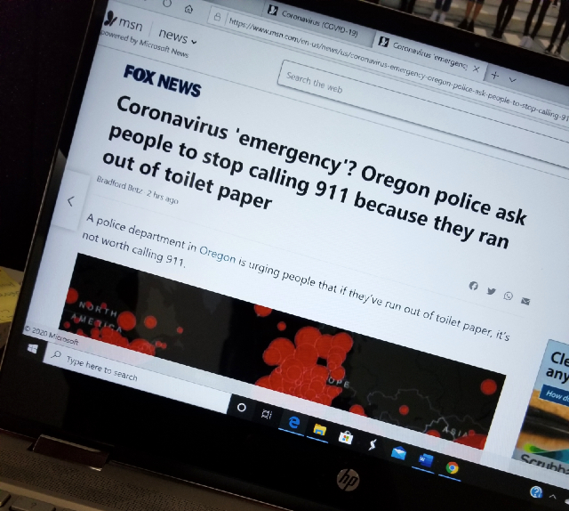

Previous days to all this disaster I was walking to my home I found this huge teddy bear in the garbage. I found it funny, but at the same time I started to think about what was really coming to this country. I felt fear, I felt confused, I was worried about my family and people I love.
I think this picture reflects people desperation in these times. Even though, it seems funny and maybe stupid, I do not blame those people, I think we all go crazy at least once in life.